精读论文
论文精读
8月13日，我向北京邮电大学的郑老师发送了一封保研自荐邮件，当天便看到邮件显示“已读”，却迟迟没有收到回复。当时心里难免有些失落，默默觉得以自己的目前的条件，或许还达不到北邮的要求，便暂时将这件事搁置了。
没曾想，8月16日我在西安参加物联网设计大赛区域赛时，突然收到了郑老师课题组发来的考核通知，这份意外之喜让我又惊又喜。原本计划在区域赛结束后在西安游玩的安排直接取消，毕竟这次保研考核的机会显然更为珍贵。于是我立刻调整行程，在8月17日开启了“极限回校”模式，马不停蹄地赶回学校准备接下来的考核。
精读过程
本文提出无人机辅助LoRa网络方向性感知信道接入新方法PreLoRa，旨在最大化地空链路吞吐量。通过研究RSS与收发机相对位置的关联，构建量化方向性对地空链路影响的环空模型；基于该模型，PreLoRa可预测无人机网关短期内各配置区域驻留时间，并周期性为地面节点分配最优传输配置计划。评估显示，相较基线方法，其数据收集吞吐量最高提升65.5%。
吞吐量（throughput）：
公式1： 吞吐量=并发数/平均响应时间
公式2： 吞吐量=请求总数/总时长LoRa的调制参数：
SF：扩频因子，对码片数量取Log2对数后的数字；
CR：编码速率，有效编码率为4/(4+CR)；
BW：调制带宽，当前LoRa物理层支持的带宽范围从7.8kHz到500kHz；
NF：无线电噪声系数（单位：dB）。
BACKGROUND AND MOTIVATION
BACKGROUND
LoRa等低功耗广域网（LPWAN）凭借长距、低耗、高抗干扰优势，广泛应用于森林、水库等场景。为优化感知范围，携带LoRa模块的传感器节点稀疏部署于野外，收集非实时数据存储于存储卡，通过睡眠/唤醒模式节能（仅数据收发时唤醒）。配备LoRa网关的无人机沿规划路径定期或不定期飞行收集数据，地面节点感知无人机到达后，因可见时间短需快速上传数据；无人机脱离范围后，上传终止，节点重回睡眠。
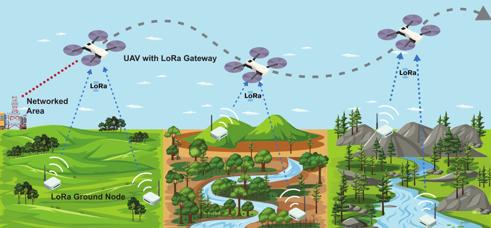
MOTIVATION
现场测量发现无人机通信存在“越近性能越差”的反常现象：200米高度的无人机网关对50米内节点的数据采集效率仅55.8%，远低于最优水平，且随高度上升问题加剧，形成节点上方数据收集空白。
这一现象源于地空通信中被忽略的全向天线方向性影响——常用全向偶极天线能量集中于水平方向，天线上下方发射功率极弱。当无人机水平靠近节点时，接收天线进入发射天线上方辐射薄弱区，导致接收信号强度衰减、传输失败及吞吐量下降。
为评估该问题，实验设置如下：无人机网关以1m/s速度在100m高度直线飞行300m，与同路径移动的地面网关对比；路径中点部署地面LoRa节点，按SF=7、BW=250kHz参数持续发包，每10秒监测一次吞吐量。
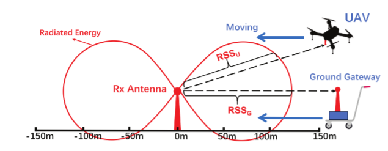
图3显示，与地面移动网关相比，无人机网关靠近节点时吞吐量显著下降，即便水平位置相近，地空通信吞吐量仅为地地通信的52.9%。我们在100m、150m、200m高度重复实验图4，可见高度越高性能退化越严重——200m高度无人机位于节点正上方时，吞吐量仅为地面网关的12.1%，节点周边70m范围内吞吐量降幅超40%。不同于地对地通信“越近质量越好”的规律，地空通信中无人机越靠近节点，链路质量反而越差。
进一步记录100m高度飞行时的接收信号强度发现：收发水平距离减小时，RSS会骤降至-20dBm，且近距离处信号波动更大，导致链路不稳定。这正是网关靠近地面节点时吞吐量大幅下降的原因。
同时作者重复了实验飞行高度为150米和不同的SF。结果如图5
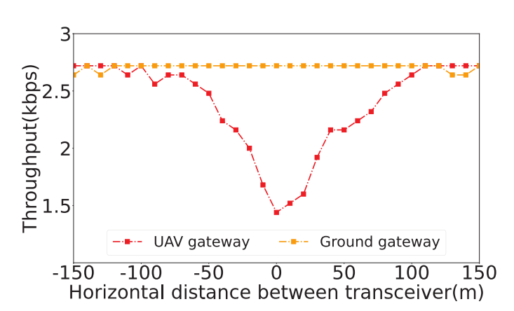
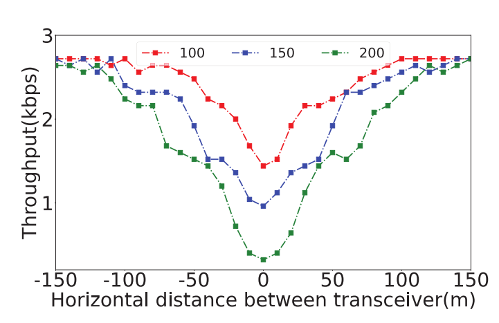
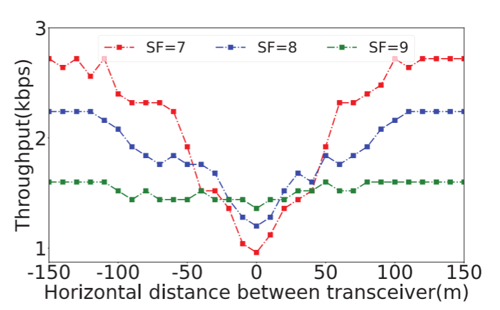
DIRECTIVITY-AWARE LINK MODEL
Directivity Model
方向性指天线在特定方向辐射或接收电磁波的能力，出于通信距离和覆盖对称性考虑，传感器网络天线多垂直于地面放置，因此方向性对传输的影响取决于收发器相对位置。当天线移动到地面天线上方时，发射和接收能力下降，接收能量会随之减少。
方向性系数：对于一个理想的圆场型天线（或者叫各向同性电线，全方向天线）来说，它的辐射功率在各个方向上是相等的。假设给定方向为$$ (\theta_0,\varphi_0) $$ ，某天线在给定方向的辐射强度 $$ U(\theta_0,\varphi_0) $$ 或辐射密度$$ S_M $$ 与理想点源天线 $$ U_0(\theta_0,\varphi_0) $$ 之比，用公式表示为
$$
D(\theta_0,\varphi_0) = \frac{U(\theta_0,\varphi_0)}{U_0(\theta_0,\varphi_0)}
\tag{1}
$$
接下来看一下文中的方向性系数公式，U(θ) 表示天线在方向 θ 上的辐射强度，分母是把 U(θ) 在整个上半空间（θ 从 0 到 π）做立体角积分后归一化得到的平均辐射强度，于是 D(θ) 的物理意义就是：在 θ 方向上的辐射强度与“平均辐射强度”的比值，用来说明能量在该方向上集中的程度
$$
D(\theta)=\frac{U(\theta)}
{\displaystyle\frac{1}{2}\int_{0}^{\pi} U(\theta)\sin\theta, d\theta}
\tag{2}
$$
文中第一句话就给出了对应的定义，和我在网上搜到的有出入，这里以文中给出定义作为标准
Directivity coefficient is a parameter used to quantify the concentration of energy radiated by an antenna in a given direction.
对于一根理想半波偶极子（whip antenna），其辐射强度为
$$
U(\theta)=\frac{E_0^2}{2\eta_0}\sin^2\theta\tag{3}
$$
其中$$E_0$$为幅度常数，$$\eta_0$$是自由空间波阻抗（≈377 Ω）。把它代入式 (2) 可算得$$D(\theta)=\frac{3}{2}\sin^2\theta$$
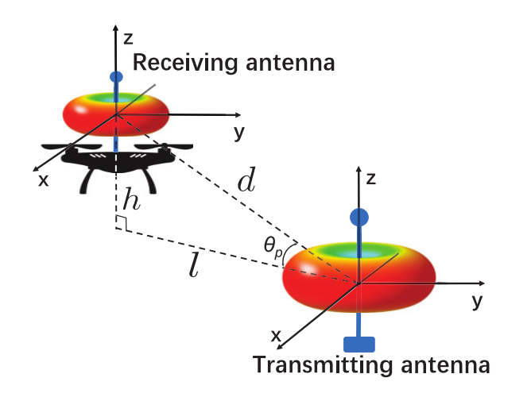
对于发射天线，最大辐射方向与到接收天线方向之间的夹角为$$\theta_t=\frac{\pi}{2}- \theta_p$$
对于接收天线，同样分析可得夹角为$$\theta_r=\frac{\pi}{2}+ \theta_p$$
$$
D(\theta_t)=\frac{U(\theta_t)}
{\displaystyle\frac{1}{2}\int_{0}^{\pi} U(\theta_t)\sin\theta_t, d\theta_t}=
\frac{\frac{1}{2}\sin^2\theta_t}
{\displaystyle\frac{1}{2}\int_{0}^{\pi} \frac{1}{2}\sin^2\theta_t\sin\theta_t, d\theta_t}
=\frac{3}{2}\sin^2\theta_t
=\frac{3}{2}\sin^2!\left(\frac{\pi}{2}-\theta_{\mathrm{p}}\right)
=\frac{3}{2}\cos^2\theta_{\mathrm{p}}
\tag{4}
$$
同样可得$$D(\theta_r)=\frac{3}{2}\cos^2\theta_{\mathrm{p}}$$
Friis 传输公式给出接收功率
$$
P_{\mathrm{rx}}=
P_{\mathrm{tx}}\frac{\lambda^2}{(4\pi d)^2},
\eta_{\mathrm{r}}\eta_{\mathrm{t}},
D(\theta_{\mathrm{t}})D(\theta_{\mathrm{r}}),
\tag{5}
$$
- $$P_{\mathrm{tx}}$$ ：发射功率；
- $$\lambda$$：信号波长；
- $$d=\sqrt{h^2+l^2}$$：收发天线之间的直线距离；
- $$\eta_{\mathrm{t}}, \eta_{\mathrm{r}}$$：发射、接收天线的效率（小于 1 的常数）
把刚才得到的$$D(\theta_t)$$和$$D(\theta_r)$$代入得到：
$$
P_{\mathrm{rx}}=
P_{\mathrm{tx}}\frac{\lambda^2}{(4\pi d)^2},
\eta_{\mathrm{r}}\eta_{\mathrm{t}},
\left(\frac{3}{2}\cos^2\theta_{\mathrm{p}}\right)^2
P_{\mathrm{tx}}\frac{9\lambda^2\eta_r\eta_t}{4(4\pi d)^2},
\cos^4\theta_{\mathrm{p}},
\tag{6}
$$
整理常数项
$$
P’=
P_{\mathrm{tx}}\frac{9\lambda^2\eta_{\mathrm{r}}\eta_{\mathrm{t}}}{4(4\pi)^2},d=\sqrt{h^2+l^2},
\cos(\theta_p)=\frac{l}{\sqrt{h^2+l^2}}
\tag{7}
$$
最后可以得到RSS，即接收功率
$$
P_{\mathrm{rx}}(h,l)=
P’,\frac{\cos^4\theta_{\mathrm{p}}}{d^{2}}
=P’,\frac{l^4}{(h^2+l^2)^3}.
\tag{8}
$$
由式(8)我们知当飞行高度已知的情况下，可以仅基于UAV与地面节点之间的水平距离来估计接收信号质量。作者对式(8)中的$$\frac{l^4}{(h^2+l^2)^3}$$定义为位置损失系数L，这里作者绘制L在不同飞行高度时作为水平距离的函数，如图Fig.8，随着水平距离的减小，L曲线增大，表明由于收发器之间的传输距离缩短，RSS上升。然而，当水平距离接近零时，曲线急剧下降，在原点附近形成信号空白。
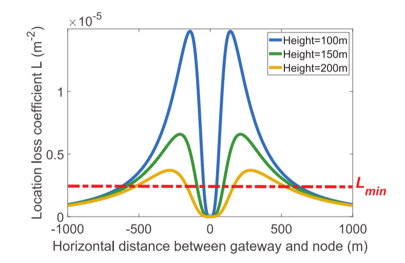
至此，作者的方向模型已经提出，接下来就是作者实验验证其有效性，让固定100m高度的无人机在不同的水平距离悬停一分钟来测量RSS。发射天线使用的设置为SF=7、BW=125 kHz、CR=4/5和PT = 0 dBm。这里的盒图是如何绘制的作者没有在文中提到，但是我在网上搜索出来可能的绘制结果：
把这一分钟内的航迹按 10m左右间隔 切成若干个“空间 bin”。落在同一个 bin 里的采样点被认为处于“同一相对位置”。在每个 bin 内，把属于该 bin 的全部 LoRa 包 RSS（线性功率平均后再转 dBm）做一次平均，得到一个“bin 均值”，获得足够多包（≥ n 个），就用这些包的 RSS 集合画出盒图的 中位数、四分位距、极值。这里作者也解释了为什么近距离的结果偏离理论模型，由于制造工艺的原因，天线顶部仍然有轻微的能量溢出，没有达到理论上的全能量抑制。至此，作者已经通过实际测量验证了其提出的方向理论模型的正确性。
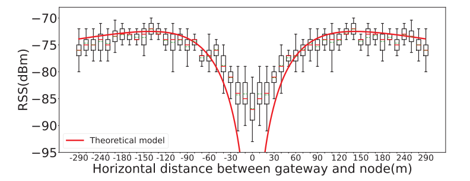
Annulus Model
环形模型如图10所示。环形模型定义了环形传输区域。每个环具有内边界和外边界，并且整个模型由多个重叠的同心环组成。只有环所覆盖的区域被认为是对应SF的可靠传输区域，而环外部的可靠性不能得到保证。此外，较小SF的区域较窄，并且嵌套在较大SF的区域内。较小的SF需要更好的传输条件，需要收发器之间更严格的相对定位。距离太近或太远都可能导致传输失败。
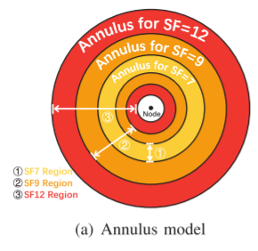
通过确定内部和外部的水平距离边界的每个SF的可靠的传输区域，开始与解码每个SF所需的最小SNR的分析。在加性白色高斯噪声信道中，符号错误概率为：
$$
P_b(SF, SNR) = 0.5 \cdot Q!\Bigl(
\sqrt{10^{\frac{\mathsf{SNR}}{10}}\cdot 2^{\mathsf{SF}+1}}
-\sqrt{1.386\cdot SF+1.154}
\Bigr) \tag{9}
$$
其中Q()是标准正态分布的尾函数。一般认为，可靠的传输需要保证Pb低于$10^{-6}$，将$P_b$等于$10^{-6}$代入，就可以获得每个SF的最小解码SNR ,$$\mathsf{SNR}{\min}^{\mathsf{SF}}$$,。给定$$\mathsf{SNR}{\min}^{\mathsf{SF}}$$，我们可以估计相应的最小$$\mathsf{RSS}_{\min}^{\mathsf{SF}}$$
：
$$
\mathsf{RSS}{\min}^{\mathsf{SF}} = P{\text{noise}} \cdot 10^{,\mathsf{SNR}{\min}^{\mathsf{SF}}/10}
\tag{10}
$$
由$P{\mathrm{rx}}(h,l)=\mathsf{RSS}{\min}^{\mathsf{SF}}$式(8)和式(10)可得
$$
L{\text{THR}}^{\text{SF}}=\frac{\text{RSS}{\min}^{\text{SF}}}{P’}
=\frac{P{\text{noise}}\cdot 10^{,\text{SNR}_{\min}^{\text{SF}}/10}}{P’}
\tag{11}
$$
位置损失系数阈值表示每个SF的可靠传输阈值。根据方向性模型，给定接收器位置处的损耗系数的值指示其可接收的信号强度。如果当前位置的系数低于给定SF的阈值，则SF被认为不适合于传输，因为它不能满足成功传输的最小RSS要求。传输类似地，基于接收机的高度和系数阈值，我们可以确定满足这些阈值的水平距离，即每个SF配置的水平距离边界。如图11所示，每个SF的阈值与某个高度的损耗系数函数曲线产生对应的交点，交点的水平坐标为边界值。较小的值$l_{in}^{SF}$是环的内边界，较大的值$l_{out}^{SF}$是环的外边界，并且边界之间的水平范围[$l_{in}^{SF}$，$l_{out}^{SF}$]是当前SF配置的传输区域,当接收机飞行高度从150 m降低到120 m时，原来的环空区域扩展到虚线所示的区域，即内水平边界减小，外水平边界增大。
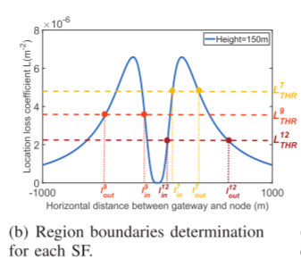
由于定位损失系数是高度相关的，当接收机的高度改变时，系数L的函数曲线从蓝线更新到红线。新生成的交点的水平坐标范围[$l_{in}^{SF}$，$l_{out}^{SF}$]大于原始水平范围[$l_{in}^{SF\prime}$，$l_{out}^{SF\prime}$]，导致环形区域的扩展。相反，如果接收器的高度从低到高增加，则环的范围将变得更窄。
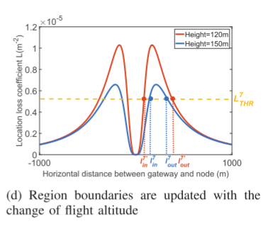
DESIGN
Model Establishment
Nodes Locations Estimation
节点位置通过无人机上行链路 RSS 测量确定：以起飞点为原点，无人机接收分组 i 时坐标为（xi，yi），结合预设参数 PSSi、RSSi 及式（11）（8）估计水平距离 li。定位通过多圆交点求解：每接收新分组以无人机坐标为圆心、li 为半径画圆，随数据积累交点逐渐密集，对密集交点取平均得节点位置（x0，y0），误差随 RSS 数据增多减小。
Model Parameter Update
环空模型依赖随无人机运动变化的损失系数 L 和阈值 LSF THR。给定高度时，L 为水平距离的已知函数，全高度范围 L 值预先计算存储，高度变化时可从查找表 O（1）检索。阈值更新中，按式（11）仅需更新 PNoise：因短时间环境稳定，通过滑动窗口提取最新分组样本，以 O（1）开销累积 RSS/SNR 样本计算平均噪声功率估计 PNoise。参数动态更新使链路模型适配无人机运动。
Boundary Estimation:
利用 PNoise 可得各 SF 的可靠传输阈值 L THR，构建环形模型需其对应的两个水平距离。为避免方程（3）求解的高开销，采用二叉搜索在固定定义域内 O（1）快速求解。L 曲线呈单峰状，峰值 L Max 前后分增减区间，其对应距离 l max 可预先获取；基于该峰值距离，在曲线两侧执行二叉搜索即得 L THR 对应的水平边界。实际存储表含不同高度的 L 峰值 L Max 及其对应距离 l max。
Transmission Scheduling
确定SF配置，这里作者将无人机在短时间内的运动视为具有恒定飞行高度的匀速直线运动，给定无人机在ping时段期间的飞行时间，其中Tping是ping时隙的时间长度，无人机在该时段期间的坐标可以表示为（xs+vx×t，ys+vy×t），x0和y0由Nodes Locations Estimation中估算获得，即可获得对应的两点间欧氏距离。
接下来是计算确定传输方案
- 计算 UAV 进入/离开每个 SF 区域的时刻
通过计算可以获得进入和离开每个SF配置区域时的时间
$$
解得的驻留区间记为
\Delta t^{\mathrm{SF}=j}
\in
\bigl[t_{\mathrm{start}}^{\mathrm{SF}=j},; t_{\mathrm{end}}^{\mathrm{SF}=j}\bigr],
\quad
j\in{7,8,9,10,11,12}.
$$
PreLoRa使用组合方案选择SF配置，而不是选择特定的SF。即，基于每个配置的导出的传输时间间隔来开发组合的传输定时序列。当时间间隔重叠时，PreLoRa优先考虑重叠时段内的较低SF，以优化数据传输速率。
在 下一个 ping 周期 T 内，预判 UAV 会依次经过哪些 SF 的 annulus 区域，从而给节点排一张 “何时发、用哪个 SF、发几包” 的调度表
- 把 6 个 SF 的区间合并成一条 无冲突时序
当多个 SF 的区间重叠时，优先使用更小的 SF（数据率高）。
合并方法：把 12 个端点按时间排序，遇到重叠就截断，得到一条 单调不降 的调度序列 0 < τ₁ < τ₂ < … < τ_m < T 每段 (τ_k, τ_{k+1}] 都唯一对应一个最优 SF
- 给每段区间算 包长
在已经知道 UAV 在每个 SF 区域会停留多久之后，决定“具体发几包、每包多长”，才能把这有限的停留时间充分利用。
LoRa数据包的前导码通常由8个符号的预前导码和4.25个符号的强制前导码组成，该强制前导码具有2个符号的同步字和2.25个符号的SFD
LoRa 包持续时间:
$$
T_p^{j}(L) = \Bigl(12.25 + N_s^{j}(L)\Bigr)\frac{2^{j}}{\text{BW}}
\tag{12}
$$
其中
$$
N_s^{j}(L)=8+\max!\Bigl(0,;
4\text{CR}\Bigl\lceil\frac{8L-4j+28+16\text{CRC}}{4j}\Bigr\rceil\Bigr)
\tag{13}
$$
| 符号 | 含义 | 典型取值/单位 |
|---|---|---|
| $N_s(L)$ | 整包的有效负载符号数（不含前导） | 整数符号 |
| $L$ | 用户净荷长度 | 字节 (B) |
| SF | 扩频因子 | 7–12 |
| CR | 编码率分母 | 1…4（对应 4/5…4/8） |
| CRC | 是否启用 CRC | 0/1 |
Step 1 计算 满包时长
把最大净荷 255 B 代入得
$$
T_{p,\max}^{\text{SF}} = T_p(255)
\tag{14}
$$
Step 2 计算 满包数量
$$
N_{\text{full}} = \Bigl\lfloor\frac{T_{\text{dwell}}^{\text{SF}}}{T_{p,\max}^{\text{SF}}}\Bigr\rfloor
\tag{15}
$$
Step 3 计算 尾包剩余时间
$$
T_{\text{tail}} = T_{\text{dwell}}^{\text{SF}} - N_{\text{full}}\cdot T_{p,\max}^{\text{SF}}
\tag{16}
$$
Step 4 反解 尾包最大净荷
令 $T_p(L_{\text{tail}})=T_{\text{tail}}$，代入并反解 $L_{\text{tail}}$。将公式13反解得到如下公式：
$$
L_{\text{tail}} = \Bigl\lfloor
\frac{1}{8}\Bigl[
\frac{\text{BW}\cdot T_{\text{tail}}}{2^{\text{SF}}} -12.25
\Bigr]\cdot 4,\text{SF};-;\text{SF}+11
\Bigr\rfloor
\tag{17}
$$
Air/Ground-to-Ground/Air Communicator
无人机网关进入收集区域后，按预定义时间定期广播含时间戳的信标；休眠节点打开信标侦听窗口接收信标，窗口会随上次同步后时长增加而扩展以防遗漏。节点接收信标后，基于时间戳向网关发送自身时间，并周期性开启接收窗口（ping 时隙），用于接收网关依据信标指定时间建立的传输计划，通过遵循计划中的定时序列 T 和分组序列 PSF 可最大化上传效率。
具体而言，节点同步后激活并发送含 ID 的 ACK 分组，告知网关准备就绪，这些数据包提供的 RSS 和 SNR 样本可帮助网关初始估计节点位置并建立环形模型。在信标周期（当前与下一个信标接收间隔）内，网关通过节点的下行链路 ping 时隙，发送即将到来的 ping 周期传输计划；ping 周期可实时调整，若无人机飞行状态剧变则缩短周期以适应链路波动。当 ping 时隙临近时，网关根据无人机当前状态和上行测量值更新环形模型，确定各节点传输计划并通过 ping 时隙分配。节点接收计划后，按无人机移动时序切换传输配置并上传数据。网关接收数据时持续记录 RSS 和 SNR，用于及时更新模型与计划。
当无人机离开通信范围，节点经多次侦听失败后进入休眠，周期性唤醒等待网关下次到达。
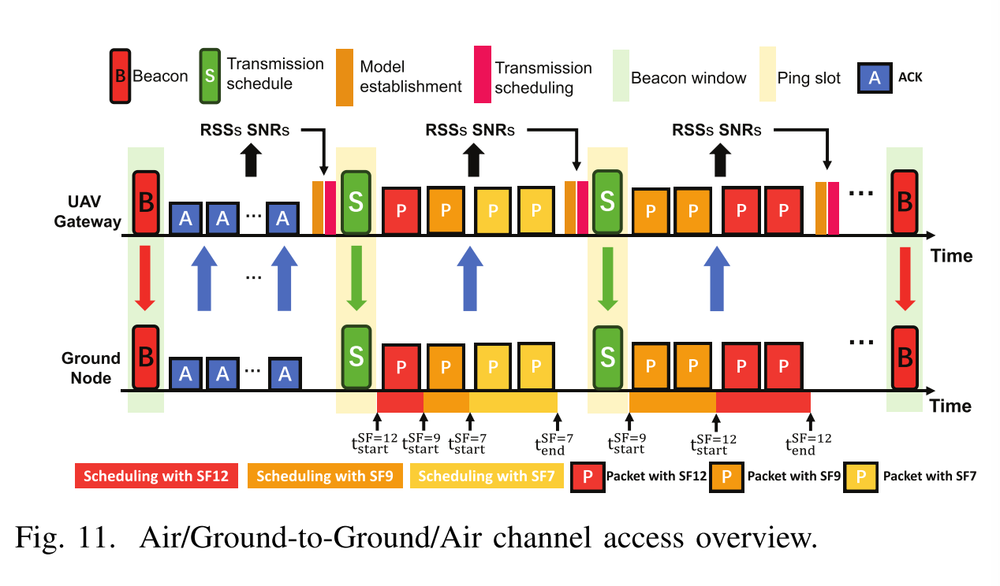
| 时间轴顺序 | 图中元素 | 动作 | 关键信息 |
|---|---|---|---|
| ① | UAV 的红色竖条 “Beacon” | 网关周期性广播 Beacon | 带时间戳，供节点同步 |
| ② | 节点灰色条 → 绿色竖条 “ACK” | 节点收到 Beacon 后醒来，立即发 ACK | 内附节点 ID、RSSI/SNR |
| ③ | UAV 收到 ACK 后离线运算 | 用 ACK 的 RSSI 更新 annulus 模型 | |
| ④ | UAV 的浅黄色竖条 “Ping Slot” | 网关下发 Transmission Plan | 告诉节点：后面 10 s 内何时发、用哪个 SF、发多长 |
| ⑤ | 节点Packet | 节点按表 连续发数据包 | 每包长度 & SF 已预先算好 |
| ⑥ | UAV 灰色虚线后 | UAV 飞出通信范围 | 节点监听超时，自动休眠 |
Multi-node Ground-to-Air Channel Access
当多颗地面节点在空域上重叠时，如何在一个高速掠过的 UAV 网关面前，既避免同 SF 碰撞，又把整体数据采集量推到理论上限。
- 为什么会碰撞
多个节点为了最大化自己吞吐，都会优先选 最小可行 SF（数据率最高）。
当 UAV 飞经重叠区域时，这些节点在同一时段、同一 SF 上 并发上传 → 互相撞包 → 全丢。
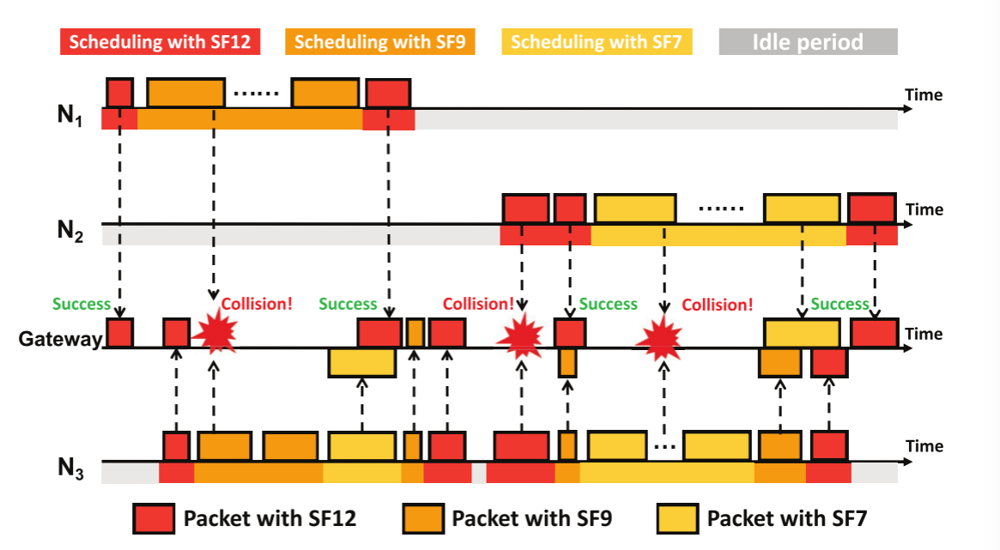
- 论文给出的办法：SF Backoff
核心思想一句话：
“谁链路更差，谁就让出高 SF，去用低 SF 的空闲信道。”
具体算法（Algorithm 1 文字版）
- 对每对节点，检查它们在当前 SF 上的时间区间是否 重叠。
- 如果重叠：
– 用 平均链路质量（由 RSS 曲线 + UAV 轨迹实时算）比较；
– 链路更差的那一个把自己的这段冲突时间 降级到下一个更慢的 SF；
– 如果已经是最慢 SF12，则把冲突区间 二等分，每人发一半。 - 重新生成 新的无冲突时序表 并发给节点。
结果
- 高链路节点继续用高速 SF → 吞吐高。
- 低链路节点退到低 SF → 仍然能发，且不再撞。
- 网络整体吞吐逼近理论上限（实验 9 节点场景提升 50 % 以上）。
- 设计特点
- 中心化：所有计算在网关完成，节点只执行表，无额外功耗。
- 零额外信令：退让决策用已有 ACK/RSSI 完成，不跑复杂握手。
- 可扩展：极端高密度场景可再叠加“代表节点”或“分簇”思想（论文末尾提到）。
EVALUATION
硬件与场地
• 节点：STM32-Nucleo-64 + Semtech SX1262，915 MHz，TP=-10 dBm，3 dBi 胶棒天线。
• 网关：同一块 SX1262 板 + Raspberry Pi 4B（跑完整 PreLoRa 网关程序），固定在 AMOVLAB Z410 四旋翼。
• 场地：北京郊区 1 km² 开阔地，节点放东南角；无人机按图 17(a) 6 条平行航线飞，间距 200 m，速度 5 m/s（另有 1 m/s、10 m/s 极端测试）。
• 高度分层：A 档 50 m - 100 m、B 档 100 m - 150 m、C 档 150 m - 200 m，对应民用无人机法规上限。基线与指标
| 基线 | 说明 | 目的 |
|---|---|---|
| LoRaWAN-ALOHA | SF7 固定 255 B | 最原始无自适应 |
| ADR | 官方自适应速率 | 低速场景基准 |
| R-ARM | 移动增强版 ADR | 移动场景标杆 |
四类实验
| 维度 | PreLoRa | ADR / R-ARM |
|---|---|---|
| 决策依据 | 基于 UAV 轨迹 + 预测链路模型（annulus model） 提前推算各 SF 的边界 | 基于 历史 ACK 成功率/丢包率 的统计结果，事后调整 |
| 触发延迟 | 0 ms —— UAV 在飞行前就生成并下发整个调度表（SF+时间），节点直接执行 | 至少要收集一个统计窗口：ADR 典型是 ≥ 64 个 ACK（加上丢包约 96 包）才能触发，大约 13–15 s（@200 ms interval） |
| 速度容忍 | UAV 快速移动（论文实验 UAV 飞行速度最高 10 m/s）仍能正常工作，因为边界是预测好的，不依赖 ACK | ACK 统计滞后 → 当节点/网关移动速度大于 5 m/s 时，信道条件变化快，ADR/R-ARM 的统计来不及更新，容易失效（文献对比中有明确指出） |
| 更新粒度 | 动态参数更新：当 UAV 位置变化时，利用测得的 RSS/SNR 更新 annulus 模型参数。论文没设定固定 10 s，而是“实时/随轨迹更新”。 | 每当有新的 ACK 成功/失败才更新 → 粒度取决于数据流量和 ACK 周期（较粗） |
单节点性能实验
- 高度 ABC 三档 + 6 条航线 + 高低速（1 m/s vs 10 m/s）。
- 结果：PreLoRa 在所有高度、所有航线均领先；**C 档高度 PDR 81.5 % vs 基线 18–66 %**。
- 原因：PreLoRa 提前算，ADR/R-ARM 事后调。
| 指标 | 定义 | 单位 | 关注层面 | 举例 |
|---|---|---|---|---|
| PDR (Packet Delivery Ratio) |
成功收到包数 ÷ 总发包数 | % | 可靠性 “有多少包活着到达” |
PDR=90% ⇒ 100 包里 90 个成功 |
| 吞吐量 (Throughput) |
单位时间内成功送达的 比特数 | kbps | 效率 “每秒能搬多少有用数据” |
3 kbps ⇒ 每秒 3000 bit 有效数据 |
单节点不同高度
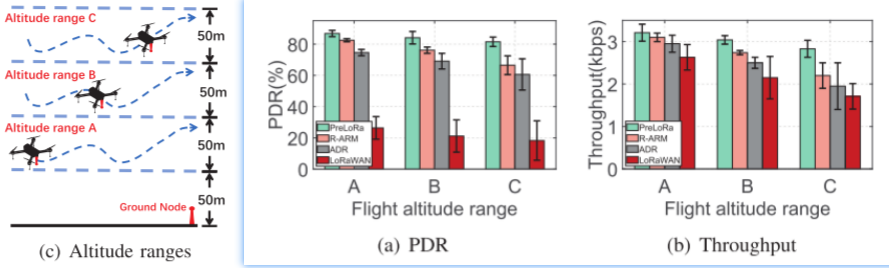
单节点不同路径
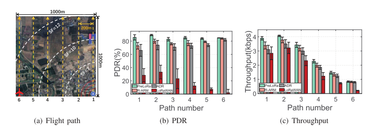
单节点不同速度
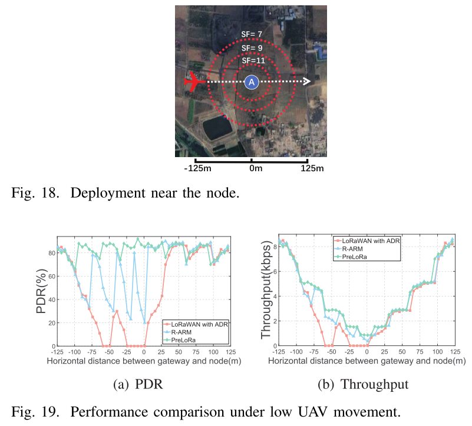
模块测试实验
PreLoRa 主要包含三个功能模块：
Ground Node Localization（地面节点定位）
目的：验证用少量上行测量就能把节点定位到足够精度，从而支撑环形（annulus）模型
方法：让 UAV 从远处飞向节点，持续累积上行 RSS 测量，用圆交点聚类法估计节点位置；用 GPS 位置作真值，统计“测量条数→定位误差”。见 Fig. 21。
结果：测量越多误差越小；约 70 条测量时，定位误差已 <15 m，论文据此把 70 条设为定位的最低样本数。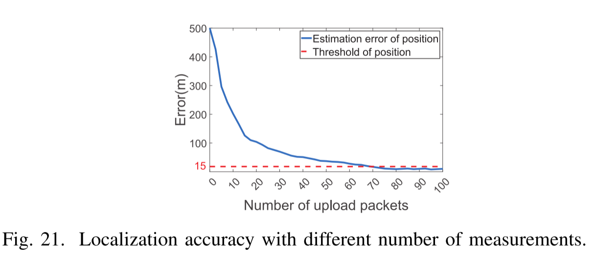
Parameters Update（模型参数在线更新）
目的：验证在线更新位置损耗系数 L与门限（决定各 SF 环边界）能否显著提高可靠性与吞吐。
方法：沿用 V-C 的飞行设置（自由飞、分高度范围 A/B/C），对比“开启参数更新 vs 关闭”，统计各高度段的 PDR 与吞吐。见 Fig. 22。
结果：开启更新后，PDR 提升分别为 11%（A）/18.4%（B）/27.5%（C）；吞吐提升为 14.6%/25.1%/28.6%。高度越高边界波动越大，收益越明显。
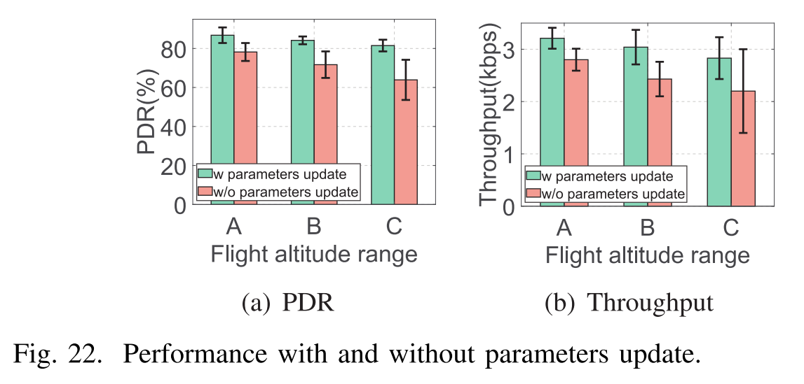
- Packet Length Control（分组长度控制）
目的：避免 UAV 穿越 SF 边界时，长包因为链路突变而失败；考察按计划窗口调节负载长度的价值。
方法：在靠近节点、边界更密集的位置（Fig. 18），设 UAV 10 m/s、BW=500 kHz，对比“启用长度控制 vs 不启用”，在不同高度段看 PDR/吞吐。见 Fig. 23。
结果：两项指标均提升；其中吞吐提升从 4.5%（A）到 17.9%（C）不等，说明在链路更脆弱（高空、边界频繁）时该模块更关键。
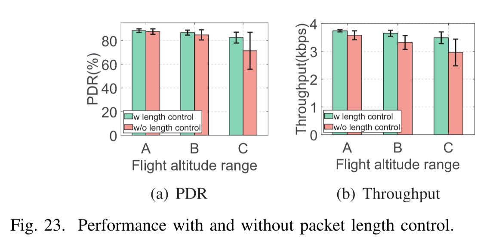
不同 ping 周期的影响
目的：UAV 定期下发调度表（SF + 时间）。如果周期太长 → UAV 已经飞远，调度滞后 → PDR 会下降。
方法：
- 设置 ping period = 15 s、30 s、60 s等。
- 节点按照对应调度执行，统计 PDR和Throughput。
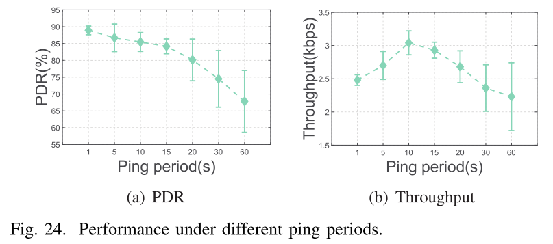
不同节点密度下的并发传输
目的：验证 SF-Backoff 算法在节点由“稀疏”到“密集”全光谱场景中的可扩展性，量化其对网络 PDR 与总吞吐的收益拐点。
方法：
- 场景：100 m × 100 m 正方形区域，节点呈网格/随机混合布设
- 密度梯度：3、5、7、9 节点（对应每 km² 约 300–900 节点，边界重叠度 30 %→80 %）
- 变量：关闭 vs 开启 SF-Backoff
- UAV：高度 B 档（100–150 m），5 m/s 任意航迹，飞行 30 min
- 指标：网络平均 PDR、聚合吞吐量、单节点能耗
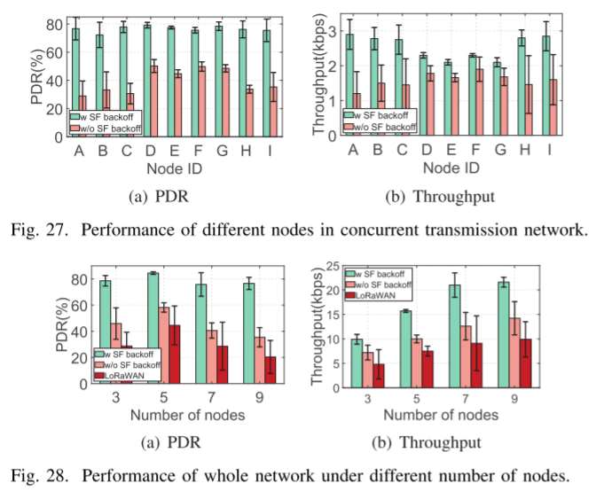
能耗对比实验
目的：量化 PreLoRa 的“预测-避免重传”策略在真实硬件上能为电池节点节省多少能量，并与 ADR / R-ARM / LoRaWAN 固定配置做横评。
方法：
- 节点：SX1262 + STM32L4（实测电流：TX 40 mA，RX 4.6 mA，Sleep 0.6 mA）
- 数据块：10 KB / 50 KB / 250 KB（对应 40 / 200 / 1000 个 255 B 包）
- 高度：A/B/C 三档各跑 1 轮
- 记录项：每阶段电流 × 时长 → mAh
- 对比方案：PreLoRa、ADR（默认 ACK 64+32）、R-ARM（5 次丢包触发）、LoRaWAN SF7 固定
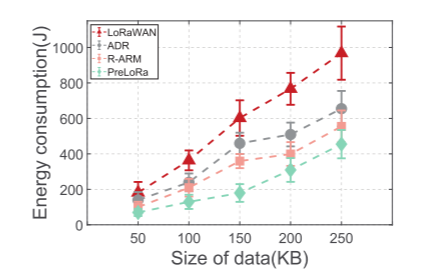
考核过程
组里的老师给我发了五篇论文，安排我从中选一篇，用一周时间制作 PPT，之后进行 20 分钟的展示和大约 10 分钟的面试。这五篇论文都是郑老师课题组的研究成果，很明显，要是不沉下心来深入精读，肯定难以通过考核。
在这五篇论文里，有一篇是关于 DNN 的，它涉及的无线通信知识最少。不过这篇论文的篇幅比其他论文稍短，而且郑老师组的主要研究方向就是无线通信领域，考虑到这些，我放弃了选择这篇 DNN 相关论文的想法。之后我把目光转向了另外四篇，最终选定了一篇有关优化 LoRa 网络的论文。主要原因是我在大三阶段修过无线通信相关课程，在课程学习中接触过 LoRa 无线通信的知识，选择这篇论文对我来说会更有基础。
接下来就是制作PPT的过程，制作PPT我就不在这里再过多阐述了。